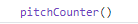

Email: Kaydon.Stubbs@gmail.com
LinkedIn: Kaydon Stubbs
Python the easy language?
Many consider Python to be the easy language. It is a high level language. It is fast to hack something together and it's eaqsy way to introduce programming to someone new to programing.
I think python is an easy language
In geaneral python is easy to learn. It is easy to get something up and running. I dont know if its what I would suggest to people to learn first as a language. I think it is better to go from a more strict language to the easier language. For me I went from c++ and c to python.
Why go from harder to easier?
I think with the eaze of python you dont need to understand what the program is doing. You may also not understand why the computer is behaving the way it is. When you learn the harder language the lower level language you need to understand at a depeer level. You need a greater understanding of what the computer is doing to write in a lower level language. For some thisis the benifit of learning python first though. You can quickly see a project come to life. You can see rapid progress. For those that need to see success early learnign python may be the path to try.
Struggels I had / have with python
A simple pitch counter in python
To start you need a file ending in .py
To make a function start by writing def then give the function name and any arguments that go with it. The you need to type a :. This : tells python that the next part of the program should be the function definition. On the new line make sure you are tabbed in one level.

You can make as many functions as you need. The next step is to call the function so that it will run in the program. To do so outside of any function type the function name with () after it.
To run the program make go to the source of the file and type in the file name.
My complete program is given here for a pitch counter